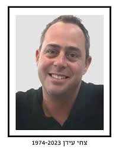

נחל עוז
עידן צחי ז"ל
אב משפחה מנחל עוז שנחטף לרצועת עזה
סיפור חיים
צחי עידן ז״ל, בנם של דבורה ודודי, נולד בכ״ט בניסן תשל״ד, 21 באפריל 1974, וגדל בקיבוץ נחל עוז. שם בנה את חייו, הקים את משפחתו והיה חלק מקהילת הקיבוץ.
צחי היה בן זוגה של גלי ואב לארבעה ילדים: מעיין ז״ל, שרון, יעל ושחר. הוא היה איש משפחה מסור, עמוד תווך בביתו, אב אוהב ונוכח, ואדם שהמשפחה הייתה מרכז חייו.
חבריו ומכריו תיארו אותו כאדם חם, שקט וטוב לב; אדם של משפחה, חברות, מוזיקה וספורט. הוא אהב כדורגל, כדורסל וטניס, והיה אוהד מושבע של קבוצת הפועל תל אביב.
צחי עבד בתעשיית ההייטק, ונזכר כאדם אחראי, יציב ואהוב, כזה שאפשר לסמוך עליו. בביתו ובקהילתו ראו בו אדם שמשרה ביטחון, מחויבות ונוכחות שקטה.
הוא אהב להאזין למוזיקה, לשחק, לעקוב אחרי ספורט, להיות עם משפחתו ולחיות את חיי הקיבוץ בנחל עוז - המקום שבו גדל, שאליו היה קשור, ושבו בחר לגדל את ילדיו עם גלי.
שבעה באוקטובר והימים שאחריו בבוקר שבת, שמחת תורה תשפ״ד, 7 באוקטובר 2023, חדרו מחבלים לקיבוץ נחל עוז במסגרת מתקפת הטרור הרצחנית על יישובי עוטף עזה.
באותו בוקר שהו צחי, גלי וילדיהם בביתם. עם הישמע האזעקות נכנסו בני המשפחה לממ״ד. בהמשך חדרו מחבלים לביתם.
בתו הבכורה של צחי, מעיין, נרצחה בבית המשפחה. לאחר מכן נחטף צחי מביתו לרצועת עזה.
במשך חודשים ארוכים הוחזק צחי בשבי. בני משפחתו נאבקו להשבתו, קיוו לקבל אות חיים וחיכו ליום שבו יוכל לשוב אליהם.
צחי עידן נרצח בשבי בכ״א בכסלו תשפ״ד, 4 בדצמבר 2023. בן 50 היה במותו.
גופתו הוחזקה ברצועת עזה למעלה משנה, עד שהושבה לישראל בכ״ט בשבט תשפ״ה, 27 בפברואר 2025.
צחי הובא למנוחת עולמים בבית העלמין בקיבוץ עינת, לצד בתו האהובה מעיין, שנרצחה בשבעה באוקטובר.
זיכרון ומילים מהלב צחי הותיר אחריו את רעייתו גלי, את ילדיו שרון, יעל ושחר, את אמו, אחיו ואחיותיו, משפחה רחבה, חברים וקהילה שלמה שנושאת את זכרו.
הוא נזכר כאיש משפחה, אדם חם ואוהב, אב מסור ובעל אהוב; אדם שאהב מוזיקה, ספורט, את הפועל תל אביב, ואת חיי המשפחה והקהילה בנחל עוז.
סיפורו של צחי הוא גם סיפור של משפחה שנקרעה באכזריות, של המתנה ממושכת וכואבת, ושל מאבק להשבתו הביתה. השבתו לקבורה בישראל, לצד בתו מעיין, הביאה סוף לחוסר הוודאות, אך לא לכאב הגדול.
צחי ייזכר כאדם של בית, אהבה, יציבות וחום; אב ובן זוג שנשא בליבו את משפחתו, וחייו נגדעו באכזריות לאחר שנחטף מביתו.